Creates a rope-like visualization comparing two numeric columns (e.g., "a" vs. "b"), with optional color filtering based on maximum value range and entropy range.
The plot is useful for visualising “winner-takes-all” behaviour in two-way comparisons, e.g. gene expression in *A* and *B* conditions.
Usage
plot_rope(
x,
column_name = NULL,
push_text = 1,
rope_width = 1,
rope_color = "#CCCCCCCC",
rope_border = TRUE,
col = c("red", "blue"),
col_bg = "whitesmoke",
pch = c(21, 21),
pch_bg = 19,
cex = 1,
entropyrange = c(0, Inf),
maxvaluerange = c(0, Inf),
plotAll = TRUE,
label = TRUE,
output_table = TRUE,
assay_name = NULL
)Arguments
- x
A
data.frameormatrixwith numeric columns, or aSummarizedExperimentcontaining such data in one of its assays.- column_name
Character. The name of the two variables that will be used for the analysis. By default it is
NULL.- push_text
Numeric. Expands or contracts text label positions along the x-axis.
- rope_width
Numeric. Thickness of the "rope" drawn in the center.
- rope_color
Character. Color for the rope's fill.
- rope_border
Logical or a color. Whether or how to draw the rope border.
- col
Character vector of length 2. Colors assigned when
a > borb > a, respectively.- col_bg
Background color (used when a row is filtered out by entropy or max value).
- pch
Integer or vector specifying point types for the main two categories.
- pch_bg
Integer specifying the point type for the "gray" points (if
plotAll=TRUE).- cex
Numeric. Expansion factor for point size.
- entropyrange
Numeric vector of length 2. Rows with
entropyoutside this range become background color.- maxvaluerange
Numeric vector of length 2. Rows with
max(a,b)outside this range become background color.- plotAll
Logical. If
TRUE, also draw "filtered" points incol_bgcolor. IfFALSE, only highlight active points.- label
Logical. If
TRUE, label the two columns near the rope ends.- output_table
Logical. If
TRUE, return the processed data frame with added columns.- assay_name
(SummarizedExperiment only) Name of the assay containing the 2-column data. If not specified, the first assay is used.
Value
If
output_table=TRUE, returns a data frame with extra columns (comx,comy,color,maxvalue,entropy) used in the plot.If
output_table=FALSE, invisibly returnsNULL.
Details
The function expects two numeric columns. If the experiment has more than
two columns, the name of the columns of interest can be specified by using
the parameter column_name. If x is a
SummarizedExperiment, it extracts the indicated assay and extracts
the columns of interest
It also uses:
- centmass() for computing comx.
- entropy() for computing Shannon entropy, stored in the
entropy column. Between two variables, entropy rangeS between 0
and 1.
The rope is drawn in the middle of the plot (the x-axis from -1 to 1, y = 0),
with thickness rope_width. Points are scattered in comy
direction for a bit of jitter within the rope.
Examples
library(SummarizedExperiment)
library(airway)
data('airway')
se <- airway
# Only use a random subset of 1000 rows
set.seed(123)
idx <- sample(seq_len(nrow(se)), size = min(1000, nrow(se)))
se <- se[idx, ]
## Normalize the data first using tpm_normalization
rowData(se)$gene_length = rowData(se)$gene_seq_end
- rowData(se)$gene_seq_start
#> [1] -88120993 -87282781 -12757325 -33023833 -89294212 -31676987
#> [7] -235459180 -17838649 -72042487 -10761177 -28941559 -142124137
#> [13] -179696098 -15144583 -23089888 -17188208 -72087382 -8941623
#> [19] -6128914 -16866251 -26868664 -105501459 -52684257 -21858909
#> [25] -16695645 -64550950 -27306656 -30492089 -47720564 -115140430
#> [31] -153507075 -207080964 -30709030 -49455025 -29811309 -188328957
#> [37] -129622944 -28825301 -73302061 -187079050 -28699806 -27995979
#> [43] -33888558 -132086509 -16309079 -138873841 -4542600 -41271078
#> [49] -90048800 -207565789 -7052671 -41757641 -70478577 -15074226
#> [55] -39874406 -61470716 -118124118 -54036874 -121829492 -71256158
#> [61] -29758816 -926175 -45229248 -47590165 -14683085 -16362309
#> [67] -70610204 -30615556 -63904180 -56364902 -114821440 -101462315
#> [73] -58563710 -9158422 -75955846 -75598948 -133781578 -63340667
#> [79] -111179442 -216669454 -14730915 -3411606 -38628029 -16799842
#> [85] -8972412 -168720862 -231658134 -216139715 -31654739 -30687978
#> [91] -32318107 -177389607 -48013379 -33211032 -228292 -50086067
#> [97] -23781213 -29687680 -53317443 -102040595 -67801364 -14531675
#> [103] -127291912 -21760811 -69825198 -39836850 -40110945 -49812902
#> [109] -11081835 -172582568 -77177778 -19239375 -23785369 -28962606
#> [115] -14988214 -31455615 -46122503 -58012493 -55954970 -71566815
#> [121] -12560575 -154795158 -32079238 -48876286 -44754135 -49328797
#> [127] -95857221 -47407633 -33545496 -7074112 -19985371 -29964122
#> [133] -176762649 -99425636 -10426888 -9860690 -141583849 -124165165
#> [139] -143087382 -194115550 -113886019 -88198893 -24882052 -35441923
#> [145] -133561448 -15978886 -109589700 -29065053 -13752832 -55179002
#> [151] -45364633 -100150641 -26388172 -31500028 -48046334 -141627157
#> [157] -4688580 -46642671 -36155221 -67024902 -38077680 -39745930
#> [163] -55888947 -27983346 -66792382 -19618273 -167584288 -108511433
#> [169] -25732010 -28654360 -175794949 -60679180 -111727037 -179224597
#> [175] -80703085 -49993772 -778745 -30030355 -47595218 -77228532
#> [181] -32336148 -23260304 -240547392 -38426265 -119205237 -21531151
#> [187] -20697561 -153786077 -208545257 -37820440 -126959811 -25662920
#> [193] -151883082 -86426478 -138710452 -32828155 -151673502 -51568647
#> [199] -157507131 -147688346 -64412212 -29364416 -32718320 -20033158
#> [205] -75142499 -31368479 -75560749 -93500171 -19901823 -71335563
#> [211] -103749270 -88963992 -45192393 -27391732 -6581407 -140762467
#> [217] -154549247 -17202383 -138269668 -33762485 -38270326 -9811163
#> [223] -58754814 -9376066 -47799469 -70070478 -45738661 -68266729
#> [229] -54864227 -28659681 -12111695 -46180719 -131904316 -56467862
#> [235] -143271839 -118894824 -129800674 -33144500 -155305059 -6600914
#> [241] -138818490 -64772226 -98969706 -32537632 -73248920 -149018956
#> [247] -150935507 -64813593 -159792310 -43328004 -25164349 -2615603
#> [253] -76414714 -45837859 -24204375 -109512836 -74955146 -11944905
#> [259] -68259872 -47172182 -19111897 -156543270 -24144509 -11998599
#> [265] -64781654 -31733961 -50937284 -27624416 -45385284 -168625959
#> [271] -30372300 -20232411 -99386837 -16501106 -9255104 -50080407
#> [277] -11910633 -75385754 -33316446 -33579823 -67707826 -109244179
#> [283] -53545427 -42668608 -9546789 -6111336 -71104590 -8754762
#> [289] -57846106 -73144658 -22007593 -91966408 -29587685 -48276432
#> [295] -35146491 -3182069 -100625085 -18485541 -52416758 -30344193
#> [301] -29412457 -73125647 -25181587 -58446019 -30708329 -85594708
#> [307] -132240835 -111322064 -133200348 -43578255 -30715542 -20433355
#> [313] -221056599 -50809639 -43490072 -3568514 -50648438 -30635612
#> [319] -26900135 -103715540 -69568260 -56720763 -74896728 -197627756
#> [325] -101768604 -174252846 -46126998 -112520900 -64557620 -90286573
#> [331] -23473154 -33084366 -12035890 -21487968 -203640690 -55155340
#> [337] -238090131 -139334549 -36817318 -159393903 -71991195 -49808176
#> [343] -5081181 -30359002 -41535013 -154697947 -12919021 -13777574
#> [349] -50452574 -150690028 -156822542 -87345503 -150954615 -44575673
#> [355] -115720487 -10596796 -31043216 -121133256 -145239296 -102113565
#> [361] -95860971 -3811317 -31941653 -8818975 -56223701 -144371846
#> [367] -40361098 -57832290 -3672580 -43124096 -28021006 -33179163
#> [373] -139085251 -32670370 -67726254 -155248063 -182584389 -183814852
#> [379] -36844393 -33571888 -29113866 -92029174 -216444130 -153769414
#> [385] -64552393 -90479081 -32272813 -31348188 -70748487 -934342
#> [391] -9570309 -40736224 -117085336 -74209946 -110608472 -4457959
#> [397] -22002902 -507299 -16227138 -32936437 -75548822 -131633547
#> [403] -111921078 -81573377 -77540700 -160320218 -117016266 -133320316
#> [409] -31679548 -7242183 -34960913 -129245835 -153777201 -119600293
#> [415] -122896963 -55609382 -63359095 -45579768 -70514471 -32969203
#> [421] -91260558 -41514164 -28829201 -71820807 -8019943 -47072628
#> [427] -46780316 -99324234 -17563020 -157180944 -11653304 -172514219
#> [433] -50968139 -52807744 -105104916 -30516378 -105750328 -34569648
#> [439] -44080952 -13378826 -72036639 -118507335 -36921319 -35732332
#> [445] -33393279 -131078616 -48634408 -4890449 -67840668 -17145878
#> [451] -52848310 -223741977 -45490715 -70196492 -56152975 -130581186
#> [457] -167148917 -99518147 -88400637 -29340936 -131492065 -151561893
#> [463] -199983817 -59664892 -80444832 -101768122 -89966927 -31581035
#> [469] -40013593 -130911350 -61211022 -100652475 -70385005 -49932658
#> [475] -148823508 -115624966 -17270258 -92100031 -107074907 -69441858
#> [481] -31616725 -75013517 -19949081 -11367144 -51601883 -39279811
#> [487] -46233789 -56214744 -97709633 -32554352 -207731519 -33704939
#> [493] -222909244 -93468277 -91624949 -99391474 -135243898 -70002351
#> [499] -86626576 -13374755 -51007290 -15105832 -35535631 -32846948
#> [505] -227916240 -208051441 -133733487 -132795360 -51675020 -28994461
#> [511] -200284563 -50887461 -74122661 -41321107 -53970989 -120081475
#> [517] -164647583 -48198636 -22972532 -89553057 -42847356 -33357416
#> [523] -47422521 -21919351 -51131624 -153325594 -179220981 -45123770
#> [529] -19841408 -111303218 -55996371 -29777040 -47676246 -150782181
#> [535] -78820606 -99933702 -53569859 -59927160 -21960468 -149305910
#> [541] -55409405 -756175 -95610280 -54840803 -32809834 -10708677
#> [547] -173978405 -96212279 -23492745 -11292423 -94806447 -40479776
#> [553] -69863007 -47208001 -54822087 -21581798 -133918175 -189463518
#> [559] -71239462 -15492166 -26325463 -125551344 -58358435 -22323334
#> [565] -28527013 -56796883 -65122238 -75713481 -2289725 -44444615
#> [571] -86057963 -67263273 -7584802 -73813052 -73931180 -112861197
#> [577] -196366557 -11943406 -160974069 -40257656 -36607322 -51907612
#> [583] -27866680 -80376194 -81272053 -2651372 -15932606 -119994818
#> [589] -158149737 -22034831 -39975064 -11281388 -40074772 -144043972
#> [595] -95655980 -13514519 -129473874 -132374504 -114710405 -27840926
#> [601] -64927984 -88781751 -41397900 -79632066 -32742904 -26213377
#> [607] -166733216 -57496299 -70033894 -29885325 -118602363 -26688623
#> [613] -66499743 -39856148 -244538402 -38978676 -139236276 -144470791
#> [619] -11410733 -144557036 -71088936 -107032509 -145625476 -8359541
#> [625] -29267101 -49067140 -79789454 -31335308 -67789674 -50526670
#> [631] -25304275 -11415975 -63303692 -109517591 -93142416 -122321344
#> [637] -2767746 -70116806 -19041448 -32252966 -39408473 -16713612
#> [643] -38301664 -49768109 -80044031 -77414400 -97700179 -36438698
#> [649] -25365594 -111279342 -14153580 -62313471 -66546823 -122489800
#> [655] -115387607 -74547434 -146085944 -39443285 -21857754 -58985384
#> [661] -19726707 -21915047 -147368803 -29213603 -146674857 -94727539
#> [667] -92297489 -21727734 -85291866 -43072675 -142531859 -37479778
#> [673] -78136555 -112332191 -75179847 -8367011 -21880209 -82443053
#> [679] -89141721 -105135116 -22298029 -118281781 -2259254 -19581601
#> [685] -84732774 -30964485 -158500336 -90608874 -55738587 -43892596
#> [691] -113149159 -31654726 -4770682 -23330438 -23116383 -41003201
#> [697] -29297452 -125235823 -142233142 -92437000 -149121520 -101389766
#> [703] -203239655 -53386094 -114514938 -9389124 -151867214 -45535737
#> [709] -56922379 -1520790 -81263268 -83739814 -94245747 -52734431
#> [715] -40516806 -70503042 -32096994 -140660672 -114900077 -85177105
#> [721] -52831526 -62224587 -75552401 -12995237 -31857650 -25082811
#> [727] -149539777 -100519140 -29765418 -249144205 -70825245 -5082831
#> [733] -71407244 -11891612 -65820615 -31162977 -196738 -201966812
#> [739] -25218916 -40465342 -43343485 -48886022 -1107636 -30498398
#> [745] -7327830 -55182733 -248153569 -45021186 -36874022 -1205708
#> [751] -73656471 -40704468 -45140364 -30065837 -584441 -103472343
#> [757] -12993227 -38374557 -61986957 -47325601 -161952982 -7571938
#> [763] -80247922 -34146507 -95308745 -124490418 -122316634 -100011780
#> [769] -228735770 -145492601 -19970854 -89066835 -156699884 -32592994
#> [775] -55762890 -55102917 -16634518 -77092786 -12407895 -55026196
#> [781] -45504688 -93544792 -3875548 -11753359 -133646992 -106351889
#> [787] -3194929 -54382247 -68888415 -50766573 -27030215 -102277496
#> [793] -35235281 -177229419 -26691378 -133195366 -42298769 -72306396
#> [799] -99205497 -2433482 -72039591 -96713905 -27068733 -31157983
#> [805] -35759431 -11314304 -101928441 -44527399 -57975928 -101805135
#> [811] -108183519 -59998045 -197107878 -22548022 -18886731 -183331408
#> [817] -74075134 -81001440 -25299357 -41347351 -100795923 -49297286
#> [823] -152126979 -100081381 -30046174 -147030607 -660337 -43084393
#> [829] -106511937 -38409766 -184250451 -75133306 -139624624 -120305606
#> [835] -126512388 -155017667 -64907087 -121974941 -30103885 -121986062
#> [841] -110318481 -159614374 -192769701 -179405852 -103131609 -31191683
#> [847] -21752643 -144519825 -41086244 -87173497 -16413687 -56085783
#> [853] -4999933 -55680797 -3688140 -102176843 -83318984 -145372975
#> [859] -106494135 -6693782 -45784167 -24411377 -156126145 -74424713
#> [865] -146673130 -71787166 -103515981 -3728645 -58272352 -206698210
#> [871] -37154246 -27467501 -100068762 -49754517 -86740882 -109338861
#> [877] -27778950 -98680418 -112396384 -95918245 -44798777 -34084330
#> [883] -21751118 -15532319 -39378846 -20884802 -26573480 -30864238
#> [889] -42881776 -94873638 -47225 -62437745 -72700732 -49264000
#> [895] -107449179 -83087381 -72114632 -27687116 -104973237 -18570942
#> [901] -36554476 -19690056 -56210102 -114691203 -86047558 -30651450
#> [907] -108535752 -928257 -49581850 -50337321 -90644085 -77316233
#> [913] -73641085 -82466565 -64701943 -170140210 -30462766 -100551034
#> [919] -30178473 -6067037 -9928411 -55608429 -138137542 -69402902
#> [925] -25196528 -207507142 -11157029 -120025573 -31535410 -23673224
#> [931] -87354967 -22338213 -41925356 -89065324 -22634861 -157297428
#> [937] -132269316 -19520895 -57570240 -43824008 -50402491 -104140093
#> [943] -20883146 -75581367 -238778547 -29706410 -47566590 -49840684
#> [949] -116917840 -191857365 -40425969 -72416119 -31815830 -76481258
#> [955] -49397103 -17433942 -43290742 -124882361 -48231338 -35896290
#> [961] -33059284 -8428173 -120969303 -46188475 -8640864 -155255323
#> [967] -47134527 -56960419 -2517930 -10106673 -30467330 -4610073
#> [973] -82031576 -101874174 -119033140 -1247566 -128598439 -69512348
#> [979] -141562660 -42889337 -33629119 -22844930 -46117312 -173472607
#> [985] -44609616 -29846028 -100537190 -142510271 -29420987 -41681580
#> [991] -37436018 -10163226 -158122928 -30349902 -100792472 -45915480
#> [997] -7876569 -85614197 -143781529 -86046444
se <- tpm_normalization(se, log_trans = TRUE, new_assay_name = 'tpm_norm')
# -------------------------------
# 1) Using a data.frame
# -------------------------------
df <- assay(se, 'tpm_norm')
df <- as.data.frame(df)
# Choose two columns of interest, in this case 'SRR1039508'
# and SRR1039516'
# Default Behaviour
plot_rope(df,
column_name = c("SRR1039508", "SRR1039516"),
output_table = FALSE)
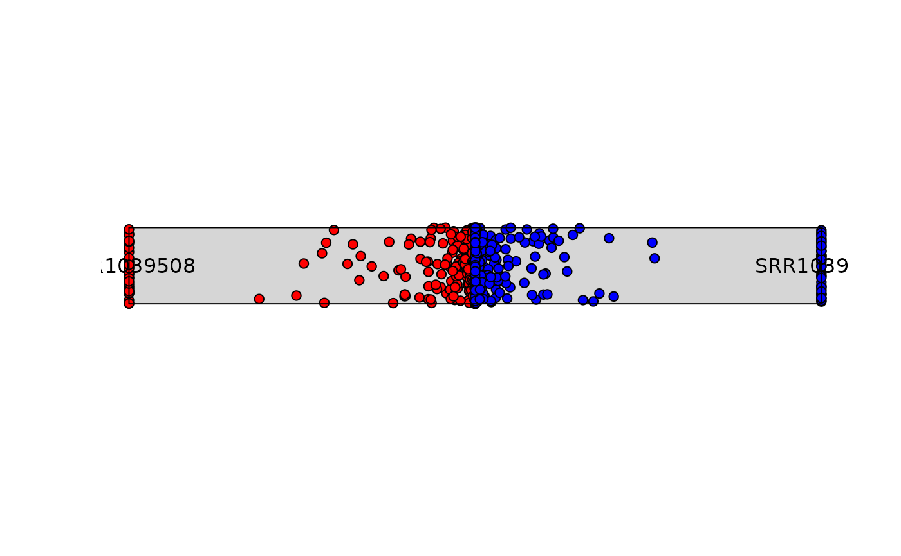
# Colors can be modified
plot_rope(df,
column_name = c("SRR1039508", "SRR1039516"),
output_table = FALSE,
col = c('darkgreen', 'darkred'))
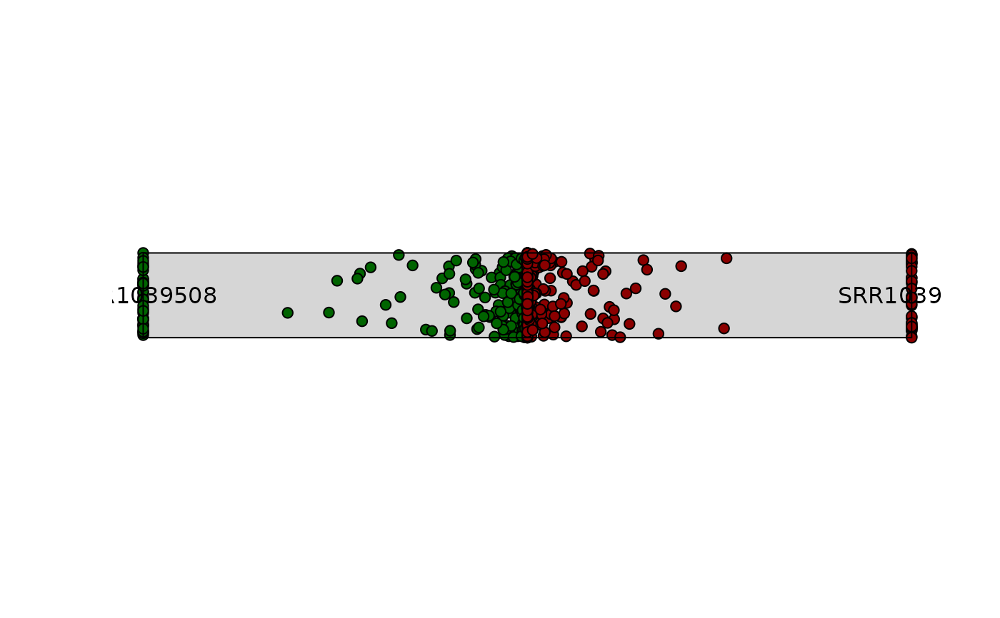
# Emphasis can be applied to highly dominant variables by controling
# entropy parameter,
# values outside of that range will be colored smokewhite.
plot_rope(df,
column_name = c("SRR1039508", "SRR1039516"),
output_table = FALSE,
col = c('darkgreen', 'darkred'),
entropyrange = c(0,0.1))
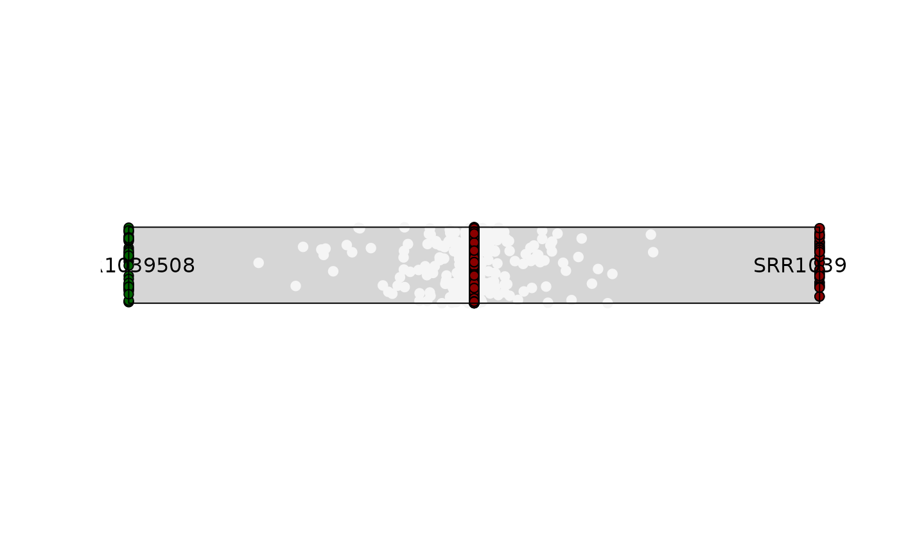
# Points in the center are a reflection of genes with expression levels = 0.
# This can be modified by adjusting the maxvalue range
plot_rope(df,
column_name = c("SRR1039508", "SRR1039516"),
output_table = FALSE,
col = c('darkgreen', 'darkred'),
entropyrange = c(0,0.1),
maxvaluerange = c(2, Inf))
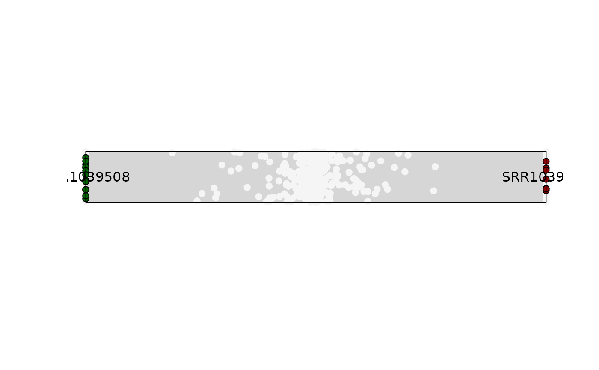
# By controling entropy range, you can observe different types of genes.
# Values closer to 0 represent dominance and closer to 1 shareness.
# Exploring genes with high normalized expression values across different
#' entropy ranges
# Looking for genes with a Log2(TPM) score between 4 and 8
plot_rope(df,
column_name = c("SRR1039508", "SRR1039516"),
output_table = FALSE,
col = c('darkgreen', 'darkred'),
entropyrange = c(0,0.1),
maxvaluerange = c(4, 8))
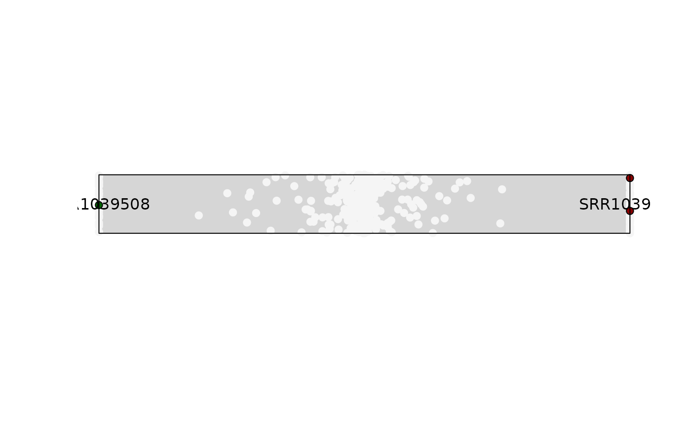
plot_rope(df,
column_name = c("SRR1039508", "SRR1039516"),
output_table = FALSE,
col = c('darkgreen', 'darkred'),
entropyrange = c(0.1,0.8),
maxvaluerange = c(4, 8))
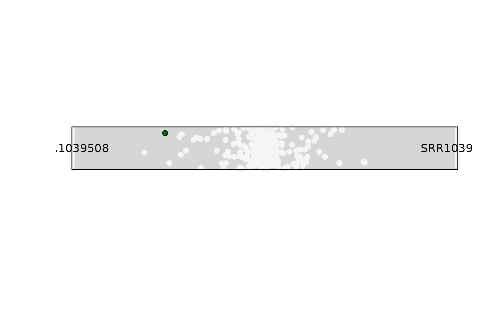
plot_rope(df,
column_name = c("SRR1039508", "SRR1039516"),
output_table = FALSE,
col = c('darkgreen', 'darkred'),
entropyrange = c(0.8,1),
maxvaluerange = c(4, 8))
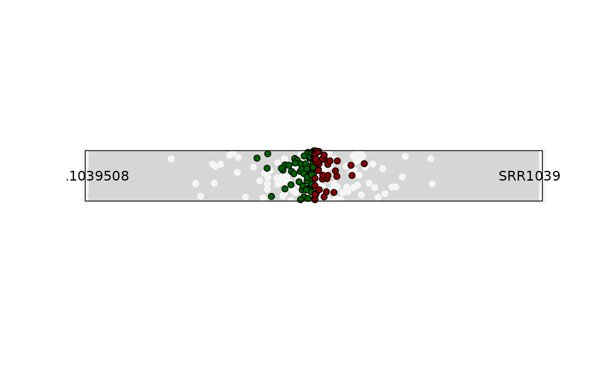
# -------------------------------
# 1) Using a SummarizedExperiment
# -------------------------------
plot_rope(se,
column_name = c("SRR1039508", "SRR1039516"),
output_table = FALSE,
col = c('lightgreen', 'indianred'),
entropyrange = c(0,0.1),
maxvaluerange = c(4, 8))
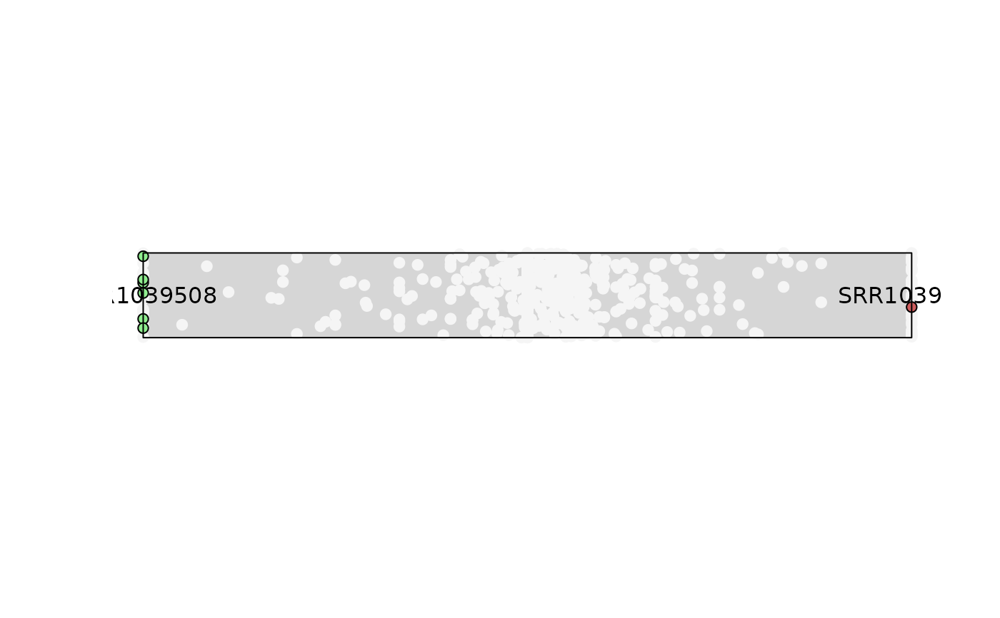
plot_rope(se,
column_name = c("SRR1039508", "SRR1039516"),
output_table = FALSE,
col =c('lightgreen', 'indianred'),
entropyrange = c(0.1,0.8),
maxvaluerange = c(4, 8))
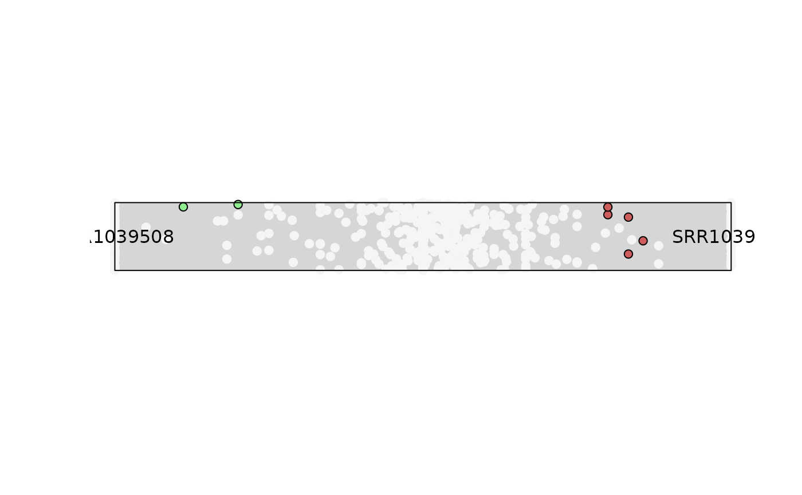
plot_rope(se,
column_name = c("SRR1039508", "SRR1039516"),
output_table = FALSE,
col = c('lightgreen', 'indianred'),
entropyrange = c(0.8,1),
maxvaluerange = c(4, 8))
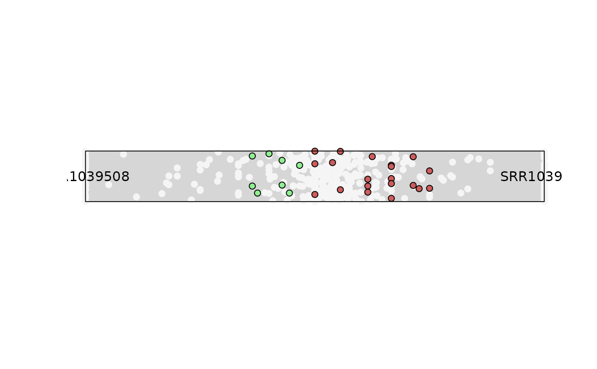
### Obtaining the DF output for the analysis
object <- plot_rope(se,
column_name = c("SRR1039508", "SRR1039516"),
output_table = TRUE,
col = c('lightgreen', 'indianred'),
entropyrange = c(0.8,1),
maxvaluerange = c(4, 8))
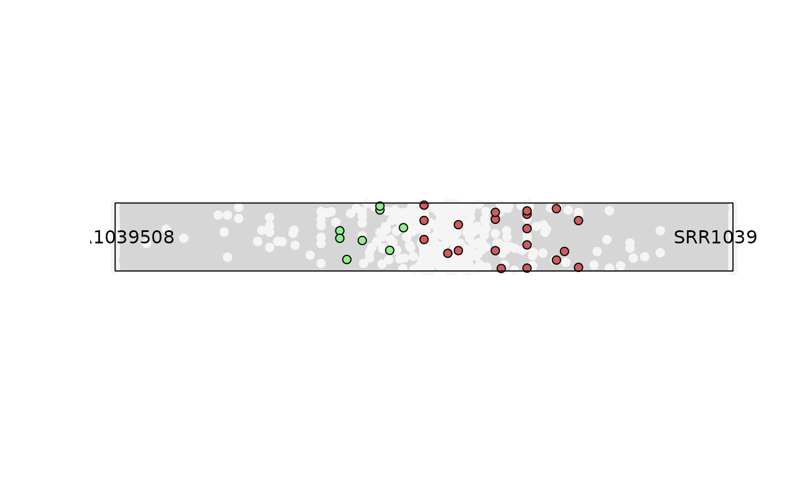
head(object)
#> a b comx comy color maxvalue entropy
#> ENSG00000260166 0 0 0.00000000 0.0530 whitesmoke 0 0.0000000
#> ENSG00000266931 0 0 0.00000000 -0.1515 whitesmoke 0 0.0000000
#> ENSG00000104774 1939 1871 -0.01784777 0.1435 whitesmoke 1939 0.9997702
#> ENSG00000267583 0 0 0.00000000 0.0600 whitesmoke 0 0.0000000
#> ENSG00000227581 1 0 -1.00000000 -0.0620 whitesmoke 1 0.0000000
#> ENSG00000227317 0 0 0.00000000 0.1700 whitesmoke 0 0.0000000